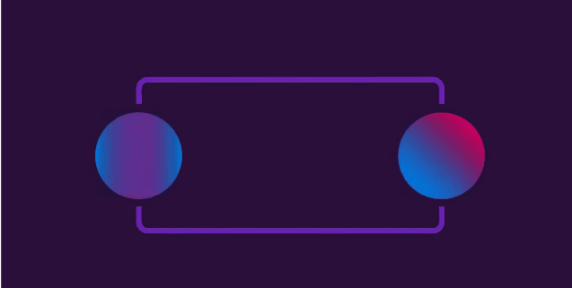

التشابك الكمي (Entanglement)
تشابك الكمّ هو ظاهرة مدهشة في الفيزياء الكمّية. عندما يتشابك جزيئان أو جسيمان مترابطان، يتشكل بينهما ارتباط غريب يجعل حالتهما الكمّية غير مستقلة عن بعضها البعض، حتى لو كانت هناك مسافة كبيرة تفصل بينهما.
فكرة التشابك الكمّي تقول إن تغييرًا يحدث في أحد الجزيئين ينعكس فورًا على الجزء الآخر بغض النظر عن المسافة بينهما. هذا يعني أنه إذا قمنا بقياس خاصية معينة لأحد الجزيئين، فإن ذلك سيؤثر على الجزء الآخر فورًا، وهذا يحدث حتى لو كانا متباعدين في أقطاب مختلفة.

(spin)فعلى سبيل المثال لنأخذ ظاهرة الدوران المغزلي للاجسام الدون ذرية
حيث تمتلك الاجسام الدون الذرية مثل الالكترونات خاصية فيزيائية وهي انها تدور حول نفسها وهذا الدوران شبيه بدوران الارض حول نفسها, فأذا احضرنا اثنين من الالكترونات من مصدر واحد أي أن عزمهم الدوراني يساوي صفر طبقا لقانون بقاء العزم الزاوي فهذا يعني بأن الالكترونين يجب أن يدوروا دائماً في اتجاهات متعاكسة
ومن خلال ما سبق من قوانين ميكانيكا الكم فنحن نعلم بأن الاجسام الدون ذرية تكون في جميع الاحتمالات قبل عملية الرصد اي ان الالكترون يدور في جميع الاتجاهات قبل عملية الرصد و ان عملية ظهور الجسم وهو يدور في اتجاه معين قائم على مبدأ الاحتمالات
وهذا يعني بأنه اذا قمنا برصد احد الالكترونات المتشابكة فأن على الالكتورن المتشابك في الجهة المقابلة ان يختار جهة دوران تكون عكس الالكترون الاول طبقا لقانون بقاء العزم الزاوي وهنا نقول بأن حالة الرصد للالكترون الاول قد اثرت على الالكترون الثاني بشكل لحظي
و قد اجريت عدة تجارب اثبتت صحة التشابك الكمي وقد تم بالفعل نقل بيانات من خلال التشابك الكمي